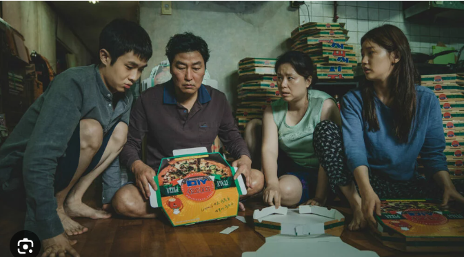
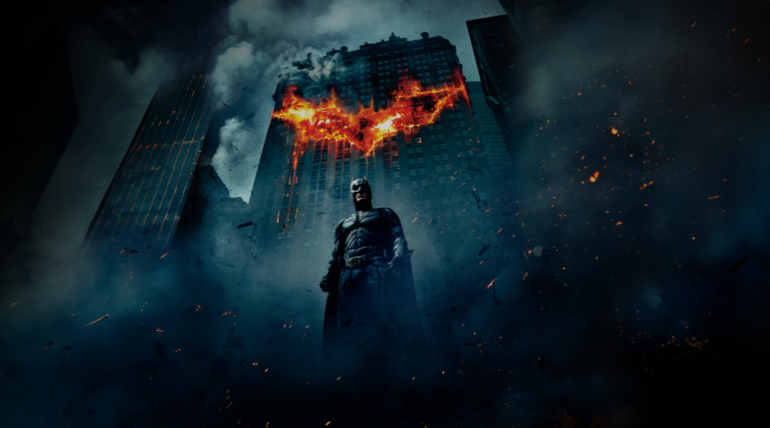

The Best movies that I have seen according to my personal taste (les meilleures films que j'ai vus selon mon goût personnel)
My Top 5 Movies (Mes 5 films préférés)
1. Parasite
This movies hit me deeply.After watching it, i remained immersed in a flood of emotion.

2. Gran Torino
Gran Torino is a powerful film. During the movie you can see the change mind of the main character until the sacrifice of his own life about thing that he never imagined at the beginning.

3. The Batman The Dark Knight
A great action movie which exposes the sacrifice of the hero according to its beliefs and the cruel of destiny. The important of image for justice and the fight against evil.
